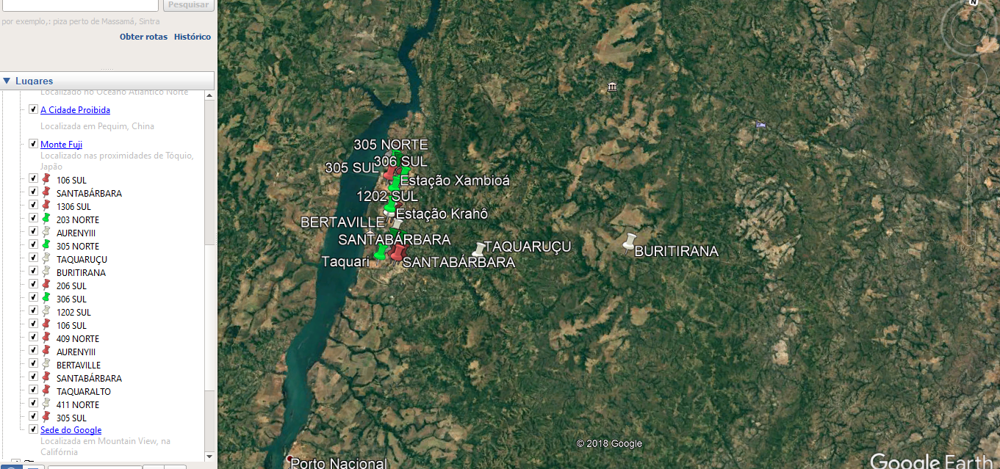

O problema abordado neste trabalho consiste em analisar o menor caminho de um ponto x e y de abrigos de palmas. No total foram 25 abrigos sendo eles: SANTA_BARBARA, 1306_SUL, 203_N, AURENY_III, 305_NORTE, 1202_SUL, 106_SUL, 409_NORT, 411_NORTE, 305_SUL, BERTAVILLE, TAQUARALTO, TAQUARUCU, BURITIRANA, 206_SUL, 306_SUL, 104_NORTE, 104_SUL, ESTACAO_APINAJE, ESTACAO_XAMBIOA, ESTACAO_KRAHO, ESTACAO_XERENTE, ESTACAO_KARAJA, ESTACAO_JAVAE e TAQUARI.
Pontos Base para aplicação do sistema(Versão Beta 1.0)
